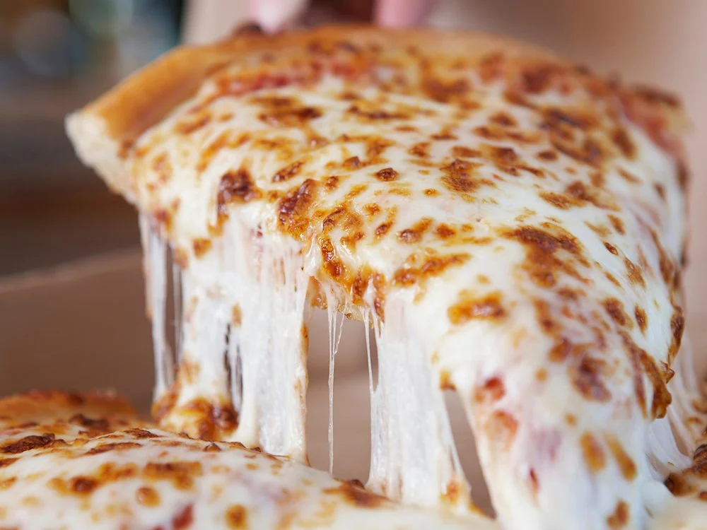

Cheese Pizza Recipe for beginners!

This is the start of the recipe for an amazinglygooey, stringy and flavorfulCheese Pizza
that we know you will love!
Ingredients
- Yeast: Instant yeast makes the job quicker. You need 1 standard packet.
- Water:Use warm water to cur down on the rise time, about 105of-115of. Anything over 130of is too hot and may burn the pizza.
- Flour:Use unbleached all purpose white flour in the pizza crust. Bleaching the flour strips away some of the protein, which will affect how much water the flour absorbs.
- Oil:Extra virgin olive oil adds wonderful flavor to the dough. Don't forget to brush the dough with olive oil before adding the toppings, which prevents the crust from tasting soggy.
- Salt:Adds flavor.
- Sugar:A little sugar increases the yeast's activity and tenderizes the pizza dough.
- Cornmeal:Use cornmeal to dust the pizza pan it gives the pizza crust a little extra flavor and crisp.
Steps
- Prepare the pizza dough through step 6 including preheating the oven to 475 degrees.
- Top the dough with the pizza sauce of your choice,the cheese of your choice (preferabbly mozzarella if you can't decide),grate the cheese and sprinkle some basil.
- Bake for 12-15 minutes. For the last minute, i move the oven rack to the top rack to really brown the edges but that is optional.
- Slice the hot pizza and serve immediately. Cover leftover pizza tightly and store in the refrigerator.